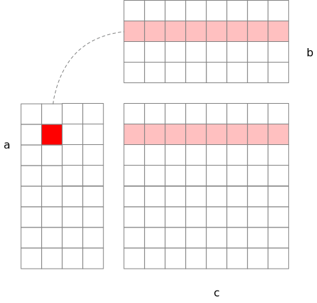

This is the first part of my reading notes of Zihao Ye’s note on FlashAttention.
I recently came across a great note about FlashAttention, which explains that a prerequisite to understanding FlashAttention is tiled matrix multiplication. To confirm my memory about this algorithm, I wrote the following MLX programs.
Of course, as a deep learning toolkit, MLX provides a built-in matrix
multiplication operator, @:
import mlx.core as mx
a = mx.ones([4, 2])
b = mx.array([[10, 10, 10, 10], [20, 20, 20, 20]])
print(a @ b)Internally, the @ operator performs multiple dot
products:
def by_definition(a, b):
c = mx.zeros([a.shape[0], b.shape[1]])
for i in range(a.shape[0]):
for j in range(b.shape[1]):
c[i, j] = mx.inner(a[i, :], b[:, j])
return c
print(by_definition(a, b))The dot product, mx.inner, includes a loop that iterates
over the elements of the input vectors. By writing this loop explicitly
as for k in range(a.shape[1]) in the following code, we
obtain the vanilla matrix multiplication algorithm. This can be seen as
a specific case of the tiled matrix multiplication algorithm, where the
tile size is \(1 \times 1\).
def tile_1x1(a, b):
c = mx.zeros([a.shape[0], b.shape[1]])
for i in range(a.shape[0]):
for k in range(a.shape[1]):
for j in range(b.shape[1]):
c[i, j] += a[i, k] * b[k, j]
return cNote that the first two loops over i and k
iterate through every element of a. For each element
a[i, k], the dot product is only performed with the
corresponding elements b[k, j] for all j
values, as shown in the figure below. The highlighted element
a[1,1] is dot-multiplied with b[:, 1].

The above algorithm can be generalized to arbitrary tile sizes, which can be proven mathematically. However, instead of going through a formal proof, I wrote the following code to verify it.
def tile_txt(a, b, t=2):
c = mx.zeros([a.shape[0], b.shape[1]])
for i in range(0, a.shape[0], t):
for k in range(0, a.shape[1], t):
for j in range(0, b.shape[1], t):
at = a[i : i + t, k : k + t]
bt = b[k : k + t, j : j + t]
c[i : i + t, j : j + t] += at @ bt
return cThe logic remains the same. Each tile \((i,
k)\) of matrix a is multiplied only with the
corresponding tiles \((k, j)\) in
matrix b, as illustrated in the following figure:
The tiles don’t need to be square. If you choose a tile size of \(n \times m\) for a, you must
split b into tiles of size \(m
\times n\). The following code verifies that the tiled matrix
multiplication algorithm works when a has tiles of size
\(2 \times K\) and b has
tiles of size \(K \times 2\).
def tile_1xt(a, b, t=2):
c = mx.zeros([a.shape[0], b.shape[1]])
for i in range(0, a.shape[0], t):
for j in range(0, b.shape[1], t):
at = a[i : i + t, :]
bt = b[:, j : j + t]
c[i : i + t, j : j + t] += at @ bt
return cThat is all. The next step is to add online softmax.